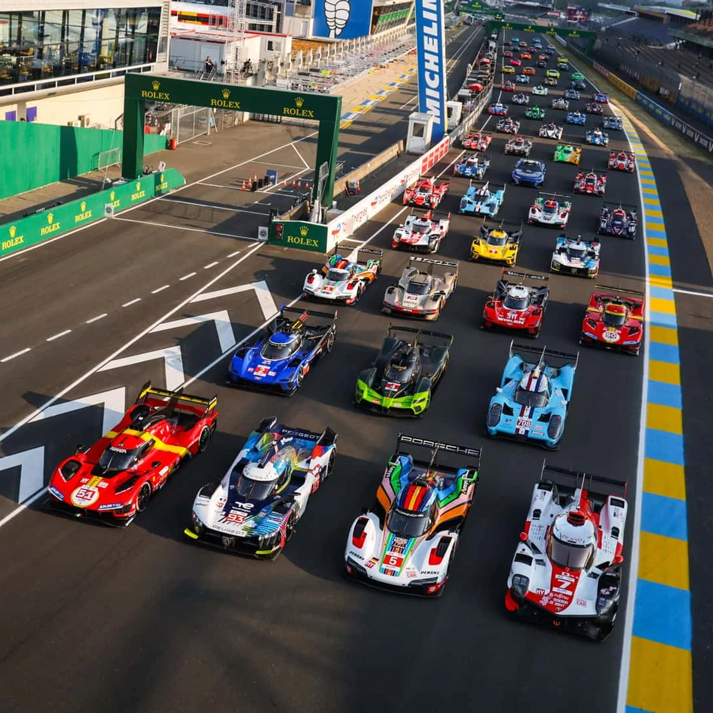

Projects
This is a website that I made in my CS 1030 class.
took a lot of inspiration from my first project on this website and I added onto what I learned from making it!
Website
This is a website that I made in my CS 1030 class.
took a lot of inspiration from my first project on this website and I added onto what I learned from making it!
Website
My second project its a simple website about motorsports and racing.
Since I watch a ton of racing I wanted to make a page dedicated to all the races that I've watched along with a way to keep up with them!
MotorSport
My third project is a presentation on the importance of protecting yourself online.
The main focus of the presentation is to give a guide people ,who may not be tech savvy, and help them protect their information online by enabling Twofactor authentication and using Passkeys!
PresentationThere were a ton of projects that I don't currently have links for.
But they were projects from my highschool Java class.
One of the projects that I make was a promposal that had a start design in the shame of a rectangle with the question repeating 10 times.
Another Project I made in highscool was a quiz ten question quiz that had muitiple choices and would tally your score at the end to give you a final result.
It was also reponsive to the inputs, so if you out the wrong answer it would have an X on it and show the right answer